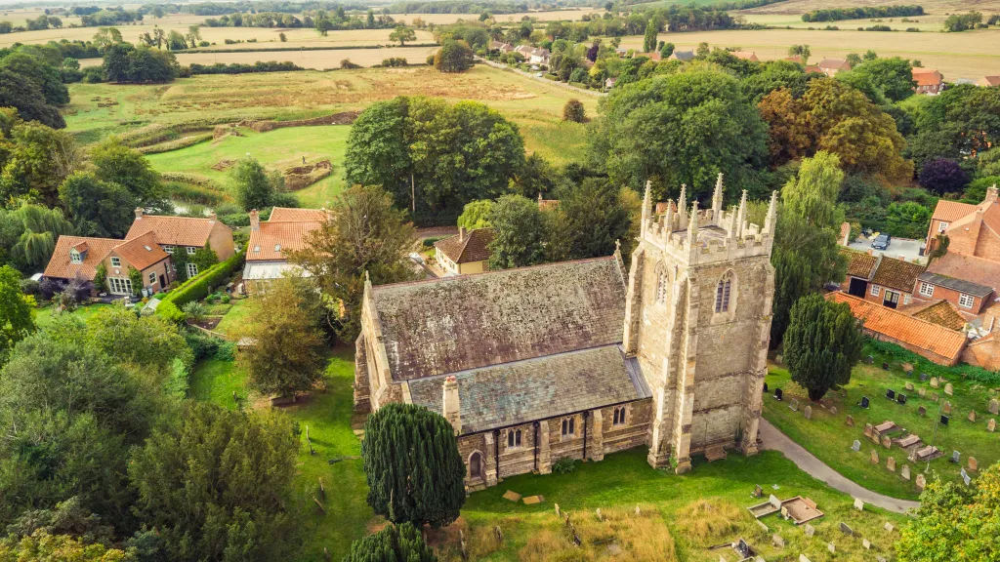
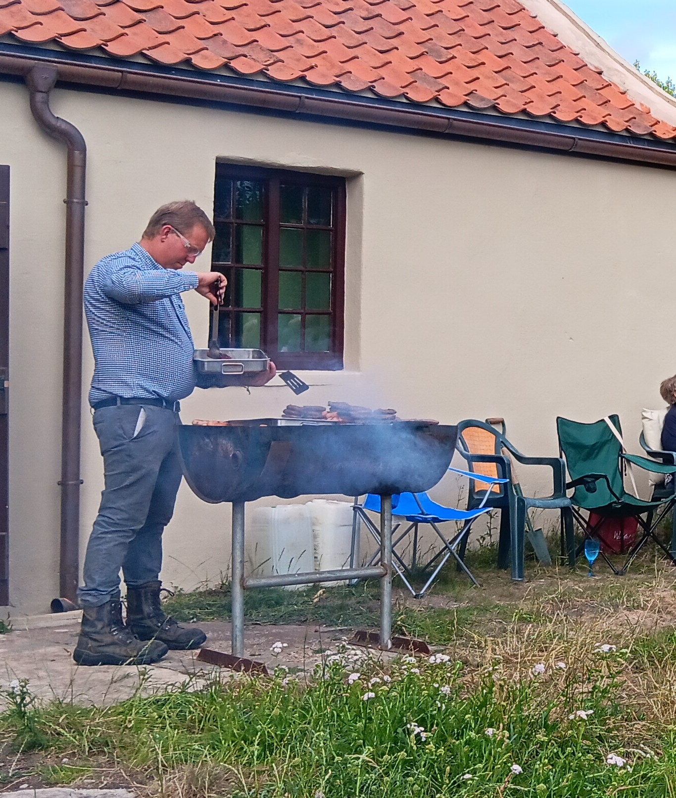
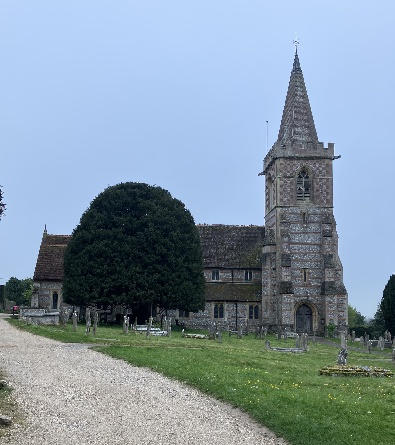
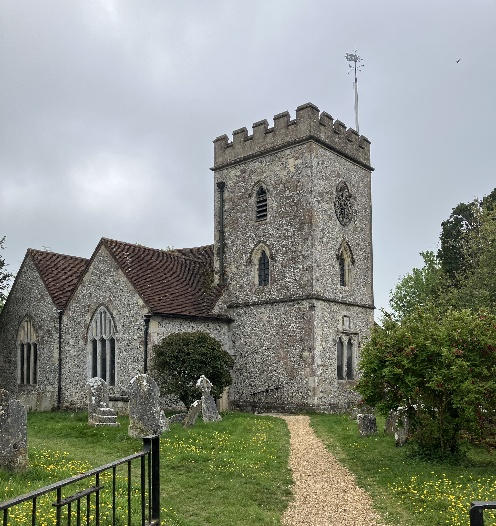
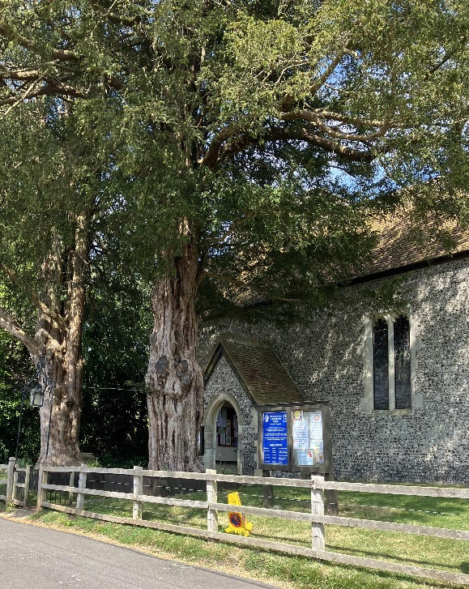
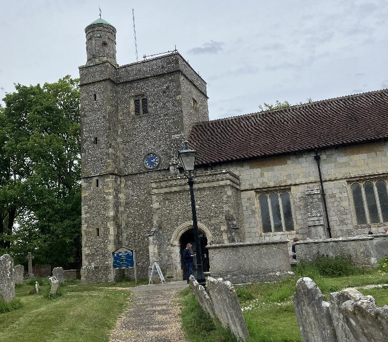
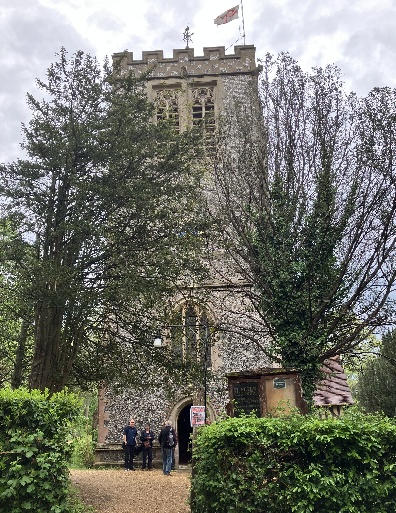

2026 News

Branch BBQ at Old Bolingbroke - July 18th

On Saturday 18 July, LDGCBR Eastern Branch held their annual BBQ. For the second year running we were at Old Bolingbroke. It was a good afternoon and evening, although numbers were down a little from last year. Fortunately the rain held off, even if it was a bit windy!
Around 30 ringers and their guests, enjoyed ringing the bells at various levels at St Peter & St Paul before heading to the Castle Shed for a delicious BBQ, expertly cooked by Richard and Ian Willoughby, ably assisted by Ian's son, Daniel.
The afternoon ringing was timed to end at 5:00 but the ringers' enthusiasm carried them on for some time after.
The quiz went well, and a raffle was staged.

Thanks go to;
- All the ringers, who participated in the ringing and who helped throughout the BBQ,
- and everyone who attended, to make it such a success.
An overall profit of £224 was raised for the EB Bell Repair Fund.
Phil Ford
Eastern Branch Hampshire Tour - Saturday 2 May 2026
Colin Simpson, the previous secretary of the Eastern Branch, organized a tour of 5 towers around his new home in Hampshire, which was attended by 12 Lincolnshire ringers consisting of Eastern, one Northern Branch and Central Branch members, Colin and various non-ringing friends.
A mixture of ringing consisting of rounds and call changes, Grandsire Triples, Plain Bob Triples and a course of May Day Treble Bob minor. Thanks go to Caitlin and Jo who organized the ringing with the varied experience levels of the participants so that everyone benefited and enjoyed the day.
The weather was exceptional, with picnics and pub lunches at various locations, we can highly recommend the Bishop Waltham’s Palace grounds, they were a fabulous backdrop. There was an unexpected cloud burst after the 4th tower, which of course was the one the cars were parked furthest away from, consequently leading to a lot of very wet ringers steaming gently in the last tower. The tour was a real success thank you to everyone and the hospitality of the Hampshire towers and ringers
Twyford St Mary – 8 bell tower, tenor 535 kg;

Colin learned to ring at this tower, so obviously it had to be included in the tour. The rules that hang in the ringing chamber caused a smile or two;
1. Let there be heard no loud voices here except the music of the bells.
2. Let all unseemly and unnecessary conversation be avoided.
3. Let there be reverence in thought and word and deed.
Owslebury St Andrew – 6 bell tower, tenor 437 kgs;

This tower boasts a rather impressive Van Gogh connection; A design for two stained glass windows was admired by Van Gogh when teaching in London.
He wrote to his brother Theo ‘In the middle of one of the windows, the portrait of an elderly lady, such a noble face, with the words ‘Thy will be done’ inscribed; in the other window the portrait of her daughter, with the quotation ‘Faith is the substance of things hoped for, the evidence of things not seen’.
A trainee reader stated ‘the fact that they inspired Van Gogh came as a real surprise to the village’.
The windows were beautiful. Blessed Mary of Upham – 8 bell tower, tenor 358 kgs; 
The ladies at this Church provided us with tea and refreshments, very gratefully received. They told us of the Stubbington family who had lived in the village and had 9 children, 7 boys and 2 girls, who are all now in their 80-90s and all were ringers.
Their children and grandchildren carry on the tradition. When 2 further bells were added in 1979, Stubbington graffiti dating 1756 was found and added to by Kim and Mandy Stubbington. One of these bells was dedicated to the Stubbington family.
Bishop’s Waltham – 8 bell tower, tenor 547 kgs;

During World War 2, ARP personnel used this Tower to look out for enemy aircraft and the posters they used can still be seen in the ringing chamber. The ‘small’ tower is affectionately known as the pepper pot.
On the topic of how small the ringing world is Jayne & I took at tour of Winchester Cathedral on the Friday with the tower correspondent of Holmes Firth tower and the tower captain of this Bishop’s Waltham Church is also a tour guide at Winchester Cathedral. She helped us navigate the Cathedral and informed us that her husband was opening the Church for us.
Curdridge St Peter – 8 bell tower, tenor 1,317 kgs;

This Tower boasts the second largest tenor in Hampshire, the heaviest being in the Cathedral of Winchester, 1,838 kgs and is part of the unique ring of 14 bells at the Cathedral. Both 7 and 8 were 2 men raises – well done Ed and Tom.
Alice Pleasance Liddell (4 May-16 Nov 34) was the fourth of ten children of Henry Liddell, Dean of Christ Church Oxford, the family lived just outside Curdridge and were benefactors to the Church. During her childhood she was an acquaintance and photographic subject of Lewis Carroll and was believed to be the inspiration for Alice’s Adventures in Wonderland.
The above may account for the very confusing backwards clock in the ringing room, the idea being that peal and quarter peal ringers would not be tempted to look at the clock whilst ringing and nothing to do with Alice or white rabbits.
Tess Rowland
Eastern Branch AGM - February 7th 2026 Ingoldmells
The AGM was held at Ingoldmells, and it was a pleasure to see it so well attended.
There was ringing both before and after the meeting, and there was also a bell ringers service at St Peter's & St Paul's.
[Read the minutes here]